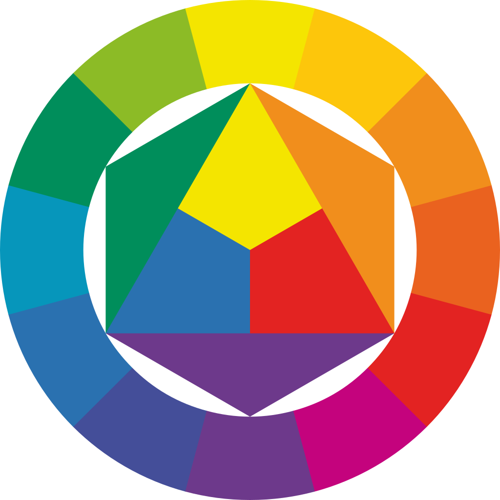

Доверие и серьёзность
Холодные схемы часто помогают продукту выглядеть упорядоченно и безопасно. Поэтому их любят сервисы, где нужно быстро показать компетентность.
Психология цвета в веб-дизайне
Цвет помогает задать тон сайту ещё до того, как пользователь начнёт читать текст. Он влияет на доверие, ощущение скорости, эмоциональную вовлечённость и даже на то, насколько интерфейс кажется понятным.

Три сценария восприятия
Каждая палитра ниже отражает типичную визуальную стратегию разных отраслей: от делового доверия до эмоционального вовлечения и премиального впечатления.
Что меняется в ощущении
Холодные схемы часто помогают продукту выглядеть упорядоченно и безопасно. Поэтому их любят сервисы, где нужно быстро показать компетентность.
Тёплые акценты ускоряют визуальный ритм и делают призывы к действию заметнее. Это полезно там, где важны эмоции и импульс.
Тёмные палитры усиливают контраст и делают интерфейс более камерным. Такой подход часто выбирают бренды, которым нужно ощущение эксклюзивности.
Демо-опрос
Укажите email, выберите понравившуюся палитру и при желании напишите, какие ощущения вызывает такой стиль оформления.
После отправки вы увидите локальное подтверждение на странице. Данные не сохраняются, поэтому этот блок выполняет демонстрационную роль.